Wildebeest Migration
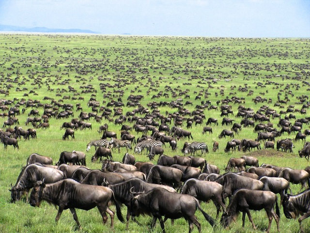 image source: http://magnificentkenya.com/masai-mara/Introduction
The great Serengeti wildebeest migration is the movement of vast numbers of the Serengeti's wildebeest, accompanied by large numbers of zebra, and smaller numbers of gazelle, eland and impala. They move in an annual pattern which is fairly predictable. They migrate throughout the year, constantly seeking fresh grazing and, it's now thought, better quality water.
The precise timing of the Serengeti wildebeest migration is entirely dependent upon the rainfall patterns each year – here we explain how the broad pattern works. We created this map to show this migration month by month – the moving red represents the main herds.
Scroll down to see the postion of herds in each month.
November
In November they are moving south through Loliondo, on the east side of the Serengeti National Park.
The short rains begin around early November. A little after this, in late November and December, the herds of the wildebeest migration arrive on the short-grass plains of the Serengeti. These are south and east of Seronera, around Ndutu and include the north of the Ngorongoro Conservation Area.
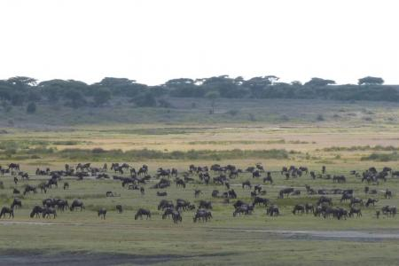 The herds at Ndutu Safari Lodge, November 2014, image source: HerdTracker.December
In December they are arriving on the east side of the short-grass plains, in time for the rains.
Dispersed across these plains, wildebeest and zebra are everywhere – feeding on the fresh, nutritious grasses.
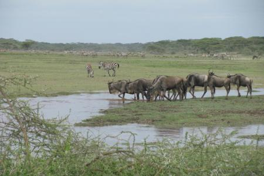 Wildebeest migration together with dozens of zebras in a small mash, December 2014, image source: HerdTracker.They stay here through January, February and March, with most wildebeest calves born in a short window around February.
January
In January, herds spread to graze across the southern Serengeti's lush short-grass plains.
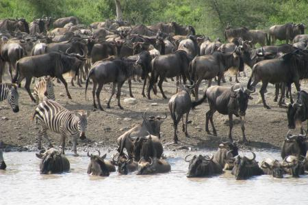 Wildebeest around Ndutu area, January 2015, image source: HerdTracker.February
In February they spread out across the short-grass plains; most calf in a 2-3 week window.
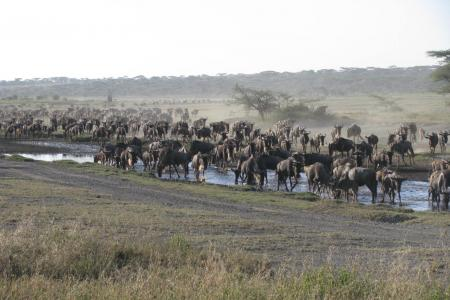 Herds are moving into the Southern Serenget, February 2015, image source: HerdTracker.March
In March they still spread over the short-grass plains of the southern Serengeti, Loliondo and NCA.
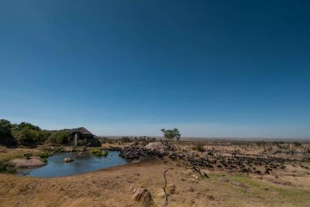 Herds desperate for water, rain on its way, March 2015. image source: HerdTracker.April
The herds start migrating north, through Moru Kopjes and Seronera areas.
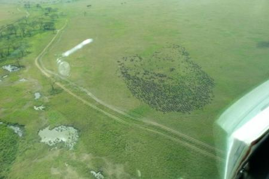 The wildebeest herds have split up again, with a small herd to the east of Seronera, image source: HerdTracker.May
By May the Serengeti's wildebeest all seem to be moving north, migrating to seek fresh grazing and water. The area around Moru Kopjes and west of Seronera is then hectic with a series of moving columns, often containing hundreds of thousands of animals – joined by many zebra, and a scattering of Thompson's and Grant's gazelles.
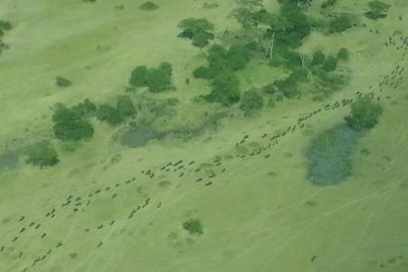 The wildebeest migration is moving quick, image source: HerdTracker.June
Some of the migration then head due north of Seronera, but most are usually further west. Around June the wildebeest migration is often halted on the south side of the Grumeti River, which has some channels which block or slow their migration north. The wildebeest then congregate there, in the Western Corridor, often building up to a high density before crossing the river. The river here is normally a series of pools and channels, but it's not continuous – and so whilst they always represent an annual feast for the Grumeti River's large crocodiles, these aren't usually quite as spectacular as the crossings of the Mara River, further north.
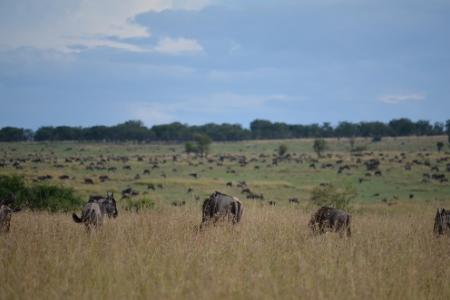 The back end of the wildebeest migration has left Fort Ikoma, image source: HerdTracker.July
The wildebeest migration continues moving northwards during July and August, often spreading out across a broad front: some heading through Grumeti Reserve and Ikorongo, others north through the heart of the Serengeti National Park.
In July, some cross the Grumeti & head through Grumeti Reserve; others head north in the park.
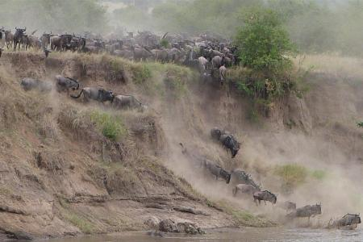 The wildebeest heading into the Mara River, image source: HerdTracker.August
In August, herds pass through Ikorongo and into the far north-west of the national park.
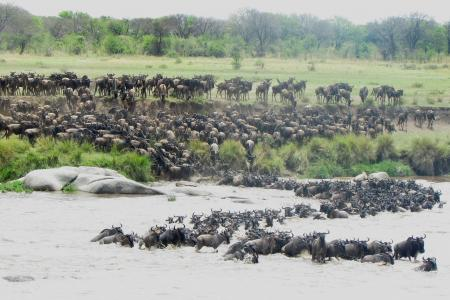 Wildebeest migration crossing the Mara River in front of the Lemala Kuria Hills Camp, image source: HerdTracker.September
September sees the herds spread out across the northern Serengeti, where the Mara River provides the migration with its most serious obstacle. This river gushes through the northern Serengeti from Kenya's adjacent Maasai Mara Game Reserve. Watching the frantic herds of the wildebeest migration crossing the Mara River can be very spectacular; there are often scenes of great panic and confusion. It's common to see herds cross the Mara River north on one day, and then back south a few days later.
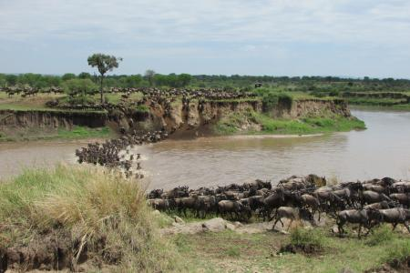 Wildebeest crossing the Mara River North to South, image source: HerdTracker.October
By October the wildebeest herds are migrating again with more accord: all are heading south, through western Loliondo and the Serengeti National Park's Lobo area, returning to the green shoots which follow the rains on the short-grass plains of the southern Serengeti in November.
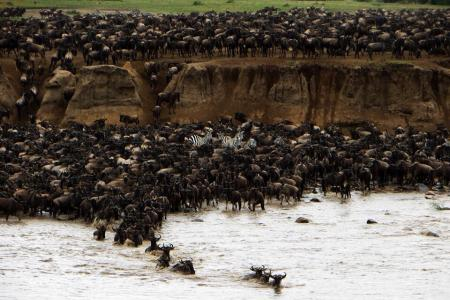 Massive crossing again towards the south, image source: HerdTracker.{kind=link}
Then the whole Serengeti Wildebeest migration starts again …
Attribution
Map Source: We created the map based on this website.
Text source: EXPERT AFRICA.
Image source: most of the images above are from HerdTracker.